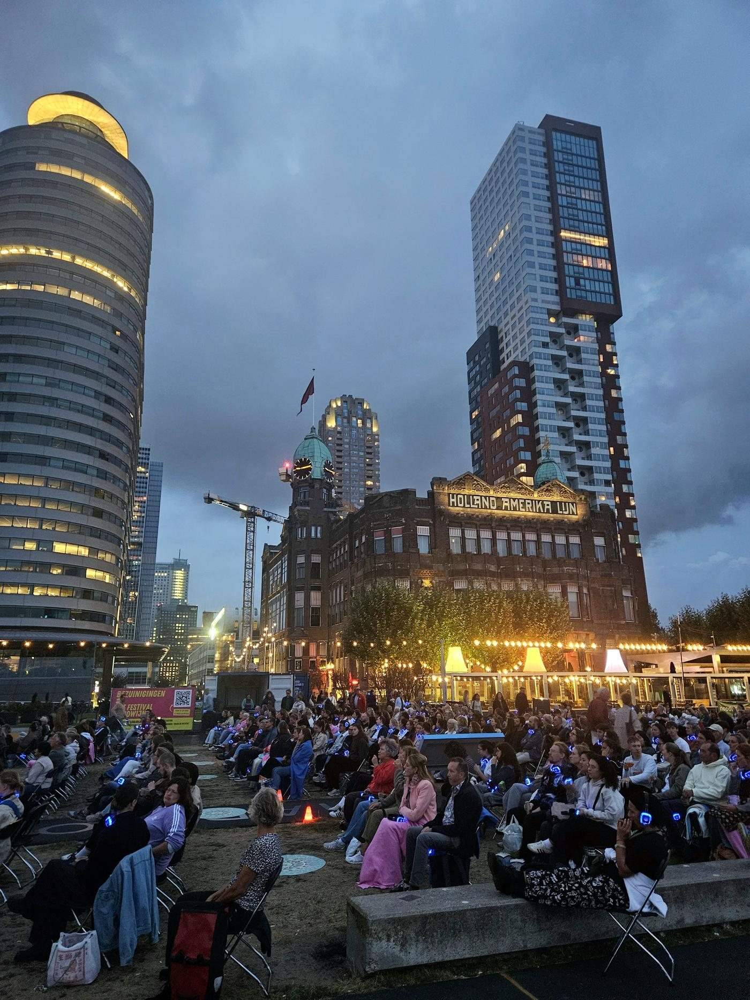
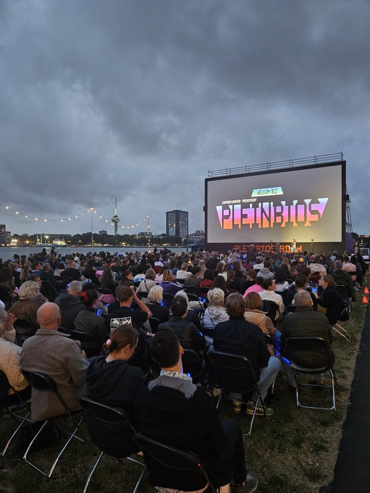
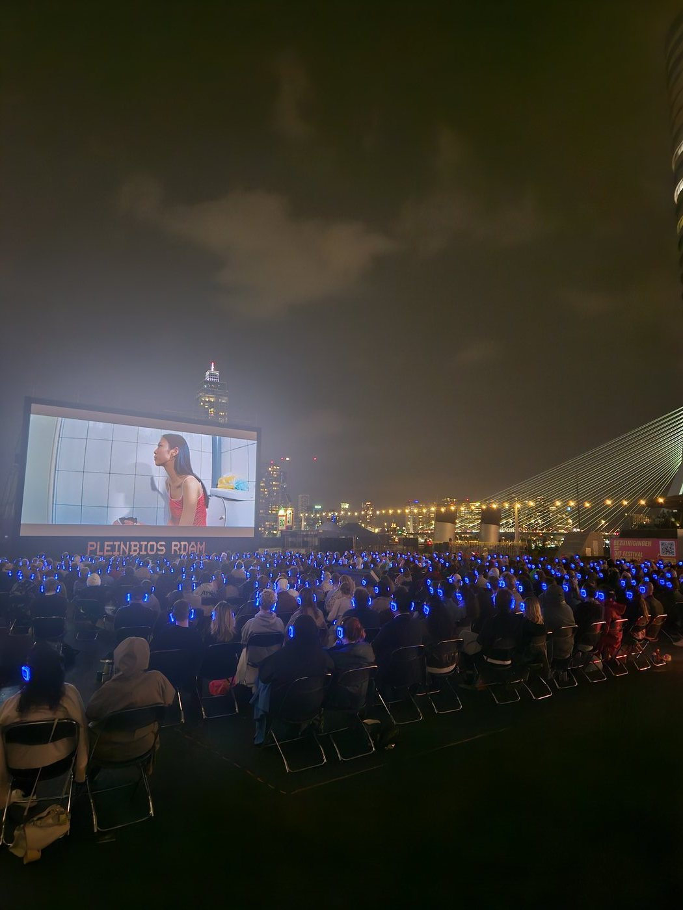
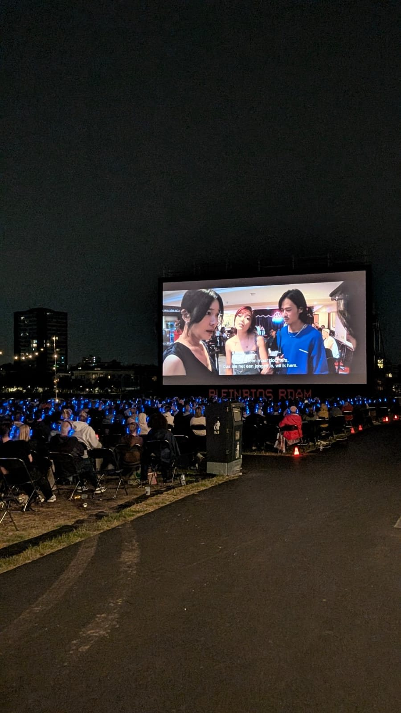

Pleinbios: filmkijken onder de Rotterdamse sterrenhemel

Dit jaar weer een bezoekje gebracht aan de Pleinbios en dit blijft toch een ultieme relaxte Rotterdam-ervaring. Eigenlijk maakt de film al bijna niet meer uit als je daar zo aan het water zit, naast Hotel New York en met uitzicht op de Erasmusbrug. Die locatie alleen al is geweldig.
Het beste is om vooraf al een kaartje te kopen, want veel avonden zijn zo uitverkocht. Bij aankomst haal je je stoeltje en je koptelefoon op en zoek je zelf een plekje op het terrein. Daarna wandel je even naar de bar voor wat lekkers: veel bezoekers (net als wij) kiezen ervoor om samen een fles wijn te delen, een plankje kaas te pakken of nog wat worstjes te scoren.

Dan begint de film en gebeurt het magische moment. Het hele terrein wordt doodstil, en overal om je heen zie je alleen nog de blauwe lampjes van de koptelefoons in het donker. Zet je die even af, dan hoor je helemaal niets meer terwijl honderden mensen om je heen naar hetzelfde scherm zitten te staren.

Pleinbios bestaat trouwens al veel langer dan je zou denken. Het begon in 1987 op het Schouwburgplein, gewoon een scherm en een hoop lef. Daarna trok de bioscoop jarenlang door de stad; ik heb er zelf nog gezeten toen die op het Museumpark stond, achter het Depot. In 2022 leek het voorbij: de gemeente stelde strengere regels voor buitenevenementen en de organisator besloot ermee te stoppen. Gelukkig nam LantarenVenster het over en sinds 2024 draait Pleinbios weer, nu vaste prik op de Wilhelminapier.
Eerlijk gezegd vind ik deze locatie zelf nog mooier dan vroeger. Het water, de wolkenkrabbers, de Erasmusbrug op de achtergrond: dat maakt het net wat specialer.
Wel een belangrijke Rotterdamse notitie: dit soort mooie initiatieven staat continu onder druk. Pleinbios startte dit jaar zelf een petitie tegen de voorgenomen bezuinigingen op het Rotterdamse evenementenbeleid. Zonde, want dit is precies het soort avond dat Rotterdam in de zomer nodig heeft.
Deze editie begon met een voorfilm van Faces of Rotterdam, die op mooie wijze een gezicht gaf aan alle culturen en nationaliteiten die onze stad rijk is. Daarna de hoofdfilm, Left Handed Girl, over een moeder en haar twee dochters die op een nachtmarkt in Taipei een nieuw bestaan proberen op te bouwen. Een pareltje van een film, gemaakt door Shih-Ching Tsou en mede geschreven door Sean Baker, die je kent van Anora.

Praktisch
Pleinbios, elke zomer op de Wilhelminapier naast Hotel New York (Kop van Zuid). Tip voor volgend jaar: houd de website en Instagram van Pleinbios in de gaten. Dit jaar kon je je via de nieuwsbrief of Instagram al een dag voor de officiële verkoop inschrijven voor kaarten, en dat scheelt nogal wat als een populaire avond snel volloopt. Kijk voor het volledige programma op pleinbioscooprotterdam.nl.
Misschien vind je dit ook leuk